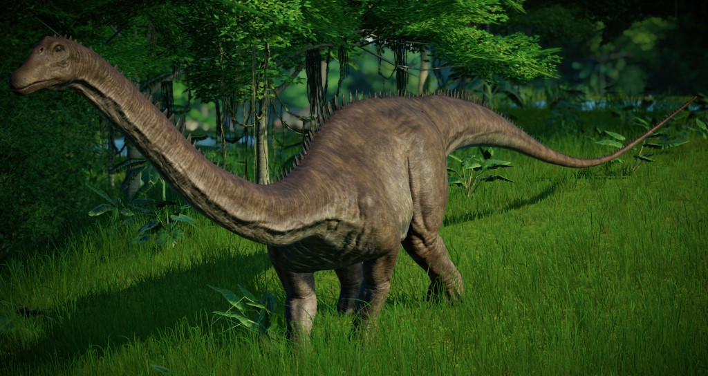

132.25 x 23.5
310.7875
¡EXCELENTE!

Datos Curiosos
Un diplodocus adulto puede alcanzar una longitud corporal de más de 30 metros, siendo su cráneo, de apenas 1 metro de longitud.
Pudo haber medido alrededor de 54 metros de largo y pesar cerca de 113 toneladas.
¿Quieres conocer otro dinosaurio?
¡ Te has equivocado! pero, ¡Tienes otra oportunidad!
DIPLODOCUS
3108.875
3107.875
31078.75
31078.75
¡Has Perdido!
3107.875